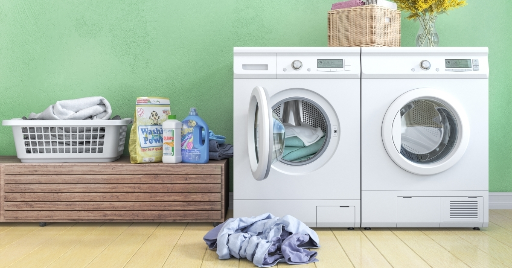
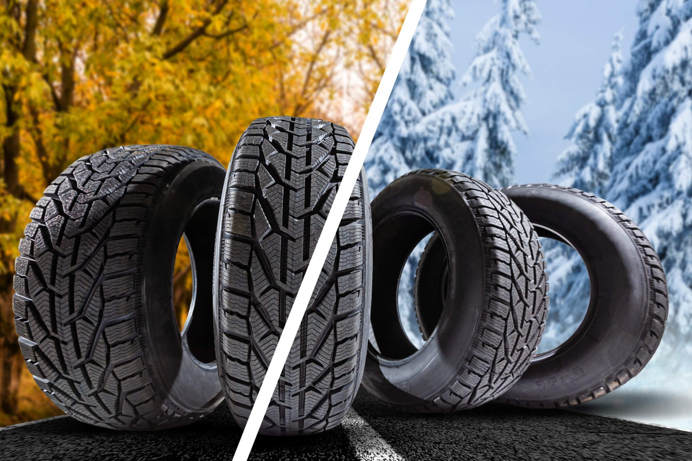

Kako izabrati perilicu rublja?
Stvari na koje treba obratiti pozornost prilikom odabira Vaše sljedeće perilice
Više o temi

Kako izabrati automobilske gume?
Odabir pravih automobilskih guma ključan je za sigurnost i performanse vašeg vozila, stoga pažljivo razmotrite faktore prije donošenja odluke.
Više o temi
Prva pomoć kod odabira laptopa
U ovom članku vam pružamo vodič za odabir savršenog laptopa, pomažući vam navigirati kroz mnoštvo opcija kako biste pronašli uređaj idealan za vaše potrebe.
Više o temi
Priprema okućnice za jesen
S prvim jesenskim danima ne naziru se baš lijepe vrtne slike, ali radovi i sami rezultati tih radova mogu biti poprilično zadovoljavajući.
Više o temi
Peleti - ekološko i povoljno grijanje?
Saznaj sve o peletima i koje su sve prednosti ovakvog načina grijanja.
Više o temi
Globalno usklađeni sustav razvrstavanja i označavanja kemikalija (GHS)
Globalni harmonizirani sustav (GHS) međunarodno je priznat sustav za razvrstavanje i označavanje kemikalija. To je zbirka standarda o tome kako razvrstati, označiti i pakirati kemikalije i kemijske proizvode na siguran i dosljedan način diljem svijeta.
Više o temi